النص العربي الأصلي · الصفحات 114–157
الفصل السادس: النتائج
الفصل السادس :النتائج -1-6نتائج الشبكة العصبونية المخصصة لقراءة خارطة التحدبات السهمية األمامية
-2-6نتائج الشبكة العصبونية المخصصة لقراءة خارطة التحدبات السهمية الخلفية
-3-6نتائج الشبكة العصبونية المخصصة لقراءة خارطة التحدبات المماسية األمامية
-4-6نتائج الشبكة العصبونية المخصصة لقراءة خارطة التحدبات المماسية الخلفية
-5-6نتائج الشبكة العصبونية المخصصة لقراءة خارطة الثخانة
-6-6نتائج الشبكة العصبونية المخصصة لقراءة خارطة االرتفاعات األمامية
-7-6نتائج الشبكة العصبونية المخصصة لقراءة خارطة االرتفاعات الخلفية
-8-6نتائج الشبكة العصبونية المخصصة لقراءة خارطة القوة االنكسارية األمامية
-9-6نتائج الشبكة العصبونية المخصصة لقراءة خارطة القوة االنكسارية الخلفية
-10-6نتائج الشبكة العصبونية المخصصة لقراءة خارطة القوة االنكسارية المكافئة
-11-6نتائج الدقة االجمالية لنظام الذكاء الصنعي
-12-6نتائج البرنامج الملحق بجهاز SIRIUS
-13-6نتائج قراءة الطبيب بدون مساعدة نظام الذكاء الصنعي
-14-6نتائج قراءة الطبيب مع مساعدة نظام الذكاء الصنعي
-15-6نتائج قراءة الطبيب مع مساعدة جهاز SIRIUS
-16-6تطبيق اختبار McNemarللمقارنة بين النماذج السابقة
114
الصفحة 115-1-6نتائج الشبكة العصبونية المخصصة لقراءة خارطة التحدبات السهمية األمامية:
فيما يلي مصفوفة االلتباس الناتجة عن مجموعة التدريب والتحقق واالختبار األشكال(48و49و)50 على التتالي .تم حساب الحساسية والنوعية والقيمة التنبؤية من اإليجابية والقيمة التنبؤية من السلبية 1 وقيمة ( )F1-scoreوالدقة لكل صنف الجداول (16و17و )18على التتالي.
-1-1-6مجموعة التدريب:
•القرنية المخروطية :الحساسية 94.2%والنوعية 97.4%والقيمة التنبؤية من اإليجابية 61.6%والقيمة التنبؤية من السلبية 99.7%وقيمة ( 93.9% )F1-scoreوالدقة لكشف هذا الصنف .96.5% •القرنيات الطبيعية :الحساسية 98.4%والنوعية 75.0%والقيمة التنبؤية من اإليجابية 94.7%والقيمة التنبؤية من السلبية 90.9%وقيمة ( 92.2% )F1-scoreوالدقة لكشف هذا الصنف .89.6% •القرنيات المشتبه بها :الحساسية 1.5%والنوعية 100.0%والقيمة التنبؤية من اإليجابية 100.0%والقيمة التنبؤية من السلبية 86.4%وقيمة (2.9% )F1-score والدقة لكشف هذا الصنف .91.5%
{kind=link}
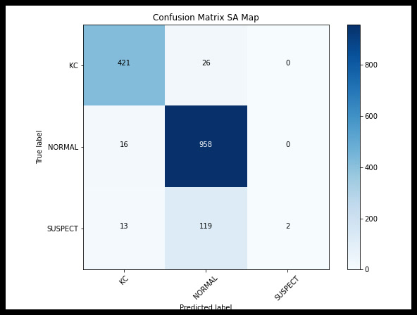
1عند ورود nanفي فصل النتائج أو المناقشة سواء ضمن النص أو الجداول فذلك يعني أن القيمة غير معرفة بسبب كون المقام صفر وفي معظم الحاالت كان السبب عدم قدرة الشبكة العصبونية على كشف أي حالة قرنية مشتبه بها بشكل صحيح أو خاطئ ونتج عن ذلك عدم قدرتنا على حساب القيمة التنبؤية من اإليجابية وقيمة F1 scoreأو كون قيمة الحساسية و القيمة التنبؤية من اإليجابية تساوي الصفر وبالتالي يكون F1 scoreغير معرف .
115
الصفحة 116جدول 16قيم مشعرات الدقة الخاصة بمجموعة التدريب(خريطة التحدبات السهمية األمامية)
-2-1-6مجموعة التحقق:
•القرنية المخروطية :الحساسية 98.2%والنوعية 96.0%والقيمة التنبؤية من اإليجابية 52.3%والقيمة التنبؤية من السلبية 99.9%وقيمة ( 94.4% )F1-scoreوالدقة لكشف هذا الصنف .96.6% •القرنيات الطبيعية :الحساسية 99.2%والنوعية 81.9%والقيمة التنبؤية من اإليجابية 96.2%والقيمة التنبؤية من السلبية 95.6%وقيمة ( 94.5% )F1-scoreوالدقة لكشف هذا الصنف .92.8% •القرنيات المشتبه بها :الحساسية 0.0%والنوعية 100.0%والقيمة التنبؤية من اإليجابية nan%والقيمة التنبؤية من السلبية 86.3%وقيمة (nan% )F1-score والدقة لكشف هذا الصنف .91.5%
{kind=link}
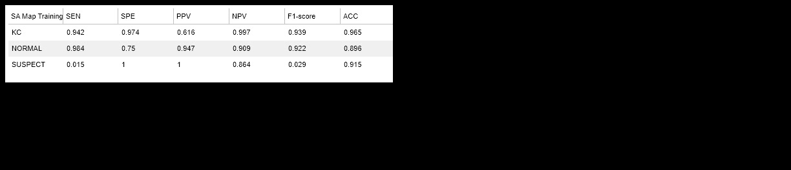
جدول 17قيم مشعرات الدقة الخاصة بمجموعة التحقق(خريطة التحدبات السهمية األمامية)
116
الصفحة 117-3-1-6مجموعة االختبار:
•القرنية المخروطية :الحساسية 100.0%والنوعية 91.0%والقيمة التنبؤية من اإليجابية 33.0%والقيمة التنبؤية من السلبية 100.0%وقيمة ()F1-score 41.3%والدقة لكشف هذا الصنف .91.2% •القرنيات الطبيعية :الحساسية 93.4%والنوعية 46.4%والقيمة التنبؤية من اإليجابية 88.8%والقيمة التنبؤية من السلبية 60.9%وقيمة ( 92.7% )F1-scoreوالدقة لكشف هذا الصنف .87.2% •القرنيات المشتبه بها :الحساسية 0.0%والنوعية 100.0%والقيمة التنبؤية من اإليجابية nan%والقيمة التنبؤية من السلبية 86.3%وقيمة (nan% )F1-score والدقة لكشف هذا الصنف .89.8%
{kind=link}
جدول 18قيم مشعرات الدقة الخاصة بمجموعة االختبار(خريطة التحدبات السهمية األمامية)
117
الصفحة 118-2-6نتائج الشبكة العصبونية المخصصة لقراءة خارطة التحدبات السهمية الخلفية:
فيما يلي مصفوفة االلتباس الناتجة عن مجموعة التدريب والتحقق واالختبار األشكال(51و52و)53 على التتالي .تم حساب الحساسية والنوعية والقيمة التنبؤية من اإليجابية والقيمة التنبؤية من السلبية وقيمة ( )F1-scoreوالدقة لكل صنف الجداول (19و20و )21على التتالي.
-1-2-6مجموعة التدريب:
•القرنية المخروطية :الحساسية 95.1%والنوعية 98.3%والقيمة التنبؤية من اإليجابية 71.2%والقيمة التنبؤية من السلبية 99.8%وقيمة ( 95.4% )F1-scoreوالدقة لكشف هذا الصنف .97.4% •القرنيات الطبيعية :الحساسية 99.5%والنوعية 75.6%والقيمة التنبؤية من اإليجابية 94.9%والقيمة التنبؤية من السلبية 97.0%وقيمة ( 92.9% )F1-scoreوالدقة لكشف هذا الصنف .90.5% •القرنيات المشتبه بها :الحساسية 0.0%والنوعية 100.0%والقيمة التنبؤية من اإليجابية nan%والقيمة التنبؤية من السلبية 86.3%وقيمة (nan% )F1-score والدقة لكشف هذا الصنف .91.4%
{kind=link}
جدول 19قيم مشعرات الدقة الخاصة بمجموعة التدريب(خريطة التحدبات السهمية الخلفية(
118
الصفحة 119-2-2-6مجموعة التحقق:
•القرنية المخروطية :الحساسية 97.3%والنوعية 97.1%والقيمة التنبؤية من اإليجابية 59.9%والقيمة التنبؤية من السلبية 99.9%وقيمة ( 95.2% )F1-scoreوالدقة لكشف هذا الصنف .97.2% •القرنيات الطبيعية :الحساسية 100.0%والنوعية 80.6%والقيمة التنبؤية من اإليجابية 95.9%والقيمة التنبؤية من السلبية 100.0%وقيمة ()F1-score 94.6%والدقة لكشف هذا الصنف .92.8% •القرنيات المشتبه بها :الحساسية 0.0%والنوعية 100.0%والقيمة التنبؤية من اإليجابية nan%والقيمة التنبؤية من السلبية 86.3%وقيمة (nan% )F1-score والدقة لكشف هذا الصنف .91.5%
{kind=link}
جدول 20قيم مشعرات الدقة الخاصة بمجموعة التحقق(خريطة التحدبات السهمية الخلفية(
-3-2-6مجموعة االختبار:
•القرنية المخروطية :الحساسية 92.3%والنوعية 97.6%والقيمة التنبؤية من اإليجابية 62.7%والقيمة التنبؤية من السلبية 99.7%وقيمة ( 68.6% )F1-scoreوالدقة لكشف هذا الصنف .97.4%
119
الصفحة 120•القرنيات الطبيعية :الحساسية 99.5%والنوعية 35.7%والقيمة التنبؤية من اإليجابية 87.6%والقيمة التنبؤية من السلبية 93.5%وقيمة ( 95.0% )F1-scoreوالدقة لكشف هذا الصنف .91.0% •القرنيات المشتبه بها :الحساسية 0.0%والنوعية 100.0%والقيمة التنبؤية من اإليجابية nan%والقيمة التنبؤية من السلبية 86.3%وقيمة (nan% )F1-score والدقة لكشف هذا الصنف .89.8%
{kind=link}
جدول 21قيم مشعرات الدقة الخاصة بمجموعة االختبار(خريطة التحدبات السهمية الخلفية(
120
الصفحة 121-3-6نتائج الشبكة العصبونية المخصصة لقراءة خارطة التحدبات المماسية األمامية:
فيما يلي مصفوفة االلتباس الناتجة عن مجموعة التدريب والتحقق واالختبار األشكال(54و55و)56 على التتالي .تم حساب الحساسية والنوعية والقيمة التنبؤية من اإليجابية والقيمة التنبؤية من السلبية وقيمة ( )F1-scoreوالدقة لكل صنف الجداول (22و23و )24على التتالي.
-1-3-6مجموعة التدريب:
•القرنية المخروطية :الحساسية 85.2%والنوعية 99.8%والقيمة التنبؤية من اإليجابية 95.5%والقيمة التنبؤية من السلبية 99.3%وقيمة ( 91.8% )F1-scoreوالدقة لكشف هذا الصنف .95.6% •القرنيات الطبيعية :الحساسية 99.9%والنوعية 66.1%والقيمة التنبؤية من اإليجابية 93.1%والقيمة التنبؤية من السلبية 99.3%وقيمة ( 90.8% )F1-scoreوالدقة لكشف هذا الصنف .87.3% •القرنيات المشتبه بها :الحساسية 0.0%والنوعية 99.9%والقيمة التنبؤية من اإليجابية 0.0%والقيمة التنبؤية من السلبية 86.2%وقيمة (nan% )F1-score والدقة لكشف هذا الصنف .91.3%
{kind=link}
جدول 22قيم مشعرات الدقة الخاصة بمجموعة التدريب(خارطة التحدبات المماسية األمامية)
121
الصفحة 122-2-3-6مجموعة التحقق:
•القرنية المخروطية :الحساسية 88.3%والنوعية 97.5%والقيمة التنبؤية من اإليجابية 60.8%والقيمة التنبؤية من السلبية 99.5%وقيمة ( 90.7% )F1-scoreوالدقة لكشف هذا الصنف .94.8% •القرنيات الطبيعية :الحساسية 99.2%والنوعية 72.2%والقيمة التنبؤية من اإليجابية 94.2%والقيمة التنبؤية من السلبية 95.1%وقيمة ( 92.0% )F1-scoreوالدقة لكشف هذا الصنف .89.1% •القرنيات المشتبه بها :الحساسية 0.0%والنوعية 99.7%والقيمة التنبؤية من اإليجابية 0.0%والقيمة التنبؤية من السلبية 86.2%وقيمة (nan% )F1-score والدقة لكشف هذا الصنف .91.2%
{kind=link}
جدول 23قيم مشعرات الدقة الخاصة بمجموعة التحقق(خارطة التحدبات المماسية األمامية)
-3-3-6مجموعة االختبار:
•القرنية المخروطية :الحساسية 92.3%والنوعية 99.8%والقيمة التنبؤية من اإليجابية 94.4%والقيمة التنبؤية من السلبية 99.7%وقيمة ( 92.3% )F1-scoreوالدقة لكشف هذا الصنف .99.5%
122
الصفحة 123•القرنيات الطبيعية :الحساسية 100.0%والنوعية 23.2%والقيمة التنبؤية من اإليجابية 85.6%والقيمة التنبؤية من السلبية 100.0%وقيمة ()F1-score 94.5%والدقة لكشف هذا الصنف .89.8% •القرنيات المشتبه بها :الحساسية 0.0%والنوعية 100.0%والقيمة التنبؤية من اإليجابية nan%والقيمة التنبؤية من السلبية 86.3%وقيمة (nan% )F1-score والدقة لكشف هذا الصنف .89.8%
{kind=link}
جدول 24قيم مشعرات الدقة الخاصة بمجموعة االختبار (خارطة التحدبات المماسية األمامية)
123
الصفحة 124-4-6نتائج الشبكة العصبونية المخصصة لقراءة خارطة التحدبات المماسية الخلفية:
فيما يلي مصفوفة االلتباس الناتجة عن مجموعة التدريب والتحقق واالختبار األشكال(57و58و)59 على التتالي .تم حساب الحساسية والنوعية والقيمة التنبؤية من اإليجابية والقيمة التنبؤية من السلبية وقيمة ( )F1-scoreوالدقة لكل صنف الجداول (25و26و )27على التتالي.
-1-4-6مجموعة التدريب:
•القرنية المخروطية :الحساسية 94.9%والنوعية 99.2%والقيمة التنبؤية من اإليجابية 83.9%والقيمة التنبؤية من السلبية 99.8%وقيمة ( 96.4% )F1-scoreوالدقة لكشف هذا الصنف .97.9% •القرنيات الطبيعية :الحساسية 99.6%والنوعية 75.7%والقيمة التنبؤية من اإليجابية 94.9%والقيمة التنبؤية من السلبية 97.6%وقيمة ( 93.0% )F1-scoreوالدقة لكشف هذا الصنف .90.7% •القرنيات المشتبه بها :الحساسية 2.2%والنوعية 99.4%والقيمة التنبؤية من اإليجابية 38.8%والقيمة التنبؤية من السلبية 86.5%وقيمة (4.1% )F1-score والدقة لكشف هذا الصنف .91.1%
{kind=link}
جدول 25قيم مشعرات الدقة الخاصة بمجموعة التدريب(خارطة التحدبات المماسية الخلفية)
124
الصفحة 125-2-4-6مجموعة التحقق:
•القرنية المخروطية :الحساسية 93.7%والنوعية 97.1%والقيمة التنبؤية من اإليجابية 59.0%والقيمة التنبؤية من السلبية 99.7%وقيمة ( 93.3% )F1-scoreوالدقة لكشف هذا الصنف .96.1% •القرنيات الطبيعية :الحساسية 99.6%والنوعية 81.2%والقيمة التنبؤية من اإليجابية 96.0%والقيمة التنبؤية من السلبية 97.7%وقيمة ( 94.5% )F1-scoreوالدقة لكشف هذا الصنف .92.8% •القرنيات المشتبه بها :الحساسية 3.0%والنوعية 98.6%والقيمة التنبؤية من اإليجابية 25.5%والقيمة التنبؤية من السلبية 86.5%وقيمة (5.1% )F1-score والدقة لكشف هذا الصنف .90.4%
{kind=link}
جدول 26قيم مشعرات الدقة الخاصة بمجموعة التحقق(خارطة التحدبات المماسية الخلفية)
-3-4-6مجموعة االختبار:
•القرنية المخروطية :الحساسية 92.3%والنوعية 99.5%والقيمة التنبؤية من اإليجابية 89.4%والقيمة التنبؤية من السلبية 99.7%وقيمة ( 88.9% )F1-scoreوالدقة لكشف هذا الصنف .99.3%
125
الصفحة 126•القرنيات الطبيعية :الحساسية 100.0%والنوعية 25.0%والقيمة التنبؤية من اإليجابية 85.9%والقيمة التنبؤية من السلبية 100.0%وقيمة ()F1-score 94.6%والدقة لكشف هذا الصنف .90.0% •القرنيات المشتبه بها :الحساسية 0.0%والنوعية 100.0%والقيمة التنبؤية من اإليجابية nan%والقيمة التنبؤية من السلبية 86.3%وقيمة (nan% )F1-score والدقة لكشف هذا الصنف .89.8%
{kind=link}
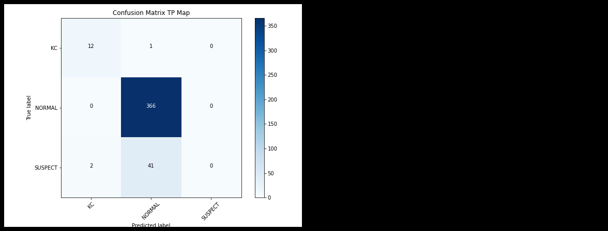
جدول 27قيم مشعرات الدقة الخاصة بمجموعة االختبار(خارطة التحدبات المماسية الخلفية)
126
الصفحة 127-5-6نتائج الشبكة العصبونية المخصصة لقراءة خارطة الثخانة:
فيما يلي مصفوفة االلتباس الناتجة عن مجموعة التدريب والتحقق واالختبار األشكال(60و61و)62 على التتالي .تم حساب الحساسية والنوعية والقيمة التنبؤية من اإليجابية والقيمة التنبؤية من السلبية وقيمة ( )F1-scoreوالدقة لكل صنف الجداول (28و29و )30على التتالي.
-1-5-6مجموعة التدريب:
•القرنية المخروطية :الحساسية 84.3%والنوعية 93.9%والقيمة التنبؤية من اإليجابية 37.9%والقيمة التنبؤية من السلبية 99.3%وقيمة ( 84.5% )F1-scoreوالدقة لكشف هذا الصنف .91.1% •القرنيات الطبيعية :الحساسية 94.5%والنوعية 74.4%والقيمة التنبؤية من اإليجابية 94.4%والقيمة التنبؤية من السلبية 74.7%وقيمة ( 90.1% )F1-scoreوالدقة لكشف هذا الصنف .86.9% •القرنيات المشتبه بها :الحساسية 3.0%والنوعية 97.4%والقيمة التنبؤية من اإليجابية 15.4%والقيمة التنبؤية من السلبية 86.3%وقيمة (4.6% )F1-score والدقة لكشف هذا الصنف .89.3%
{kind=link}
جدول 28قيم مشعرات الدقة الخاصة بمجموعة التدريب(خارطة الثخانة)
127
الصفحة 128-2-5-6مجموعة التحقق:
•القرنية المخروطية :الحساسية 79.3%والنوعية 93.1%والقيمة التنبؤية من اإليجابية 33.9%والقيمة التنبؤية من السلبية 99.0%وقيمة ( 80.7% )F1-scoreوالدقة لكشف هذا الصنف .89.1% •القرنيات الطبيعية :الحساسية 96.7%والنوعية 74.3%والقيمة التنبؤية من اإليجابية 94.5%والقيمة التنبؤية من السلبية 83.2%وقيمة ( 91.3% )F1-scoreوالدقة لكشف هذا الصنف .88.4% •القرنيات المشتبه بها :الحساسية 3.0%والنوعية 98.0%والقيمة التنبؤية من اإليجابية 19.6%والقيمة التنبؤية من السلبية 86.4%وقيمة (4.9% )F1-score والدقة لكشف هذا الصنف .89.9%
{kind=link}
جدول 29قيم مشعرات الدقة الخاصة بمجموعة التحقق(خارطة الثخانة)
-3-5-6مجموعة االختبار:
•القرنية المخروطية :الحساسية 76.9%والنوعية 94.1%والقيمة التنبؤية من اإليجابية 36.8%والقيمة التنبؤية من السلبية 98.9%وقيمة ( 42.6% )F1-scoreوالدقة لكشف هذا الصنف .93.6%
128
الصفحة 129•القرنيات الطبيعية :الحساسية 96.4%والنوعية 41.1%والقيمة التنبؤية من اإليجابية 88.2%والقيمة التنبؤية من السلبية 71.8%وقيمة ( 93.9% )F1-scoreوالدقة لكشف هذا الصنف .89.1% •القرنيات المشتبه بها :الحساسية 0.0%والنوعية 99.5%والقيمة التنبؤية من اإليجابية 0.0%والقيمة التنبؤية من السلبية 86.2%وقيمة (nan% )F1-score والدقة لكشف هذا الصنف .89.3%
{kind=link}
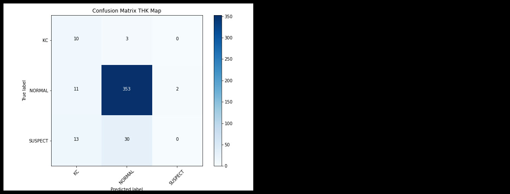
جدول 30قيم مشعرات الدقة الخاصة بمجموعة االختبار (خارطة الثخانة)
129
الصفحة 130-6-6نتائج الشبكة العصبونية المخصصة لقراءة خارطة االرتفاعات األمامية:
فيما يلي مصفوفة االلتباس الناتجة عن مجموعة التدريب والتحقق واالختبار األشكال(63و64و)65 على التتالي .تم حساب الحساسية والنوعية والقيمة التنبؤية من اإليجابية والقيمة التنبؤية من السلبية وقيمة ( )F1-scoreوالدقة لكل صنف الجداول (31و32و )33على التتالي.
-1-6-6مجموعة التدريب:
•القرنية المخروطية :الحساسية 93.5%والنوعية 97.1%والقيمة التنبؤية من اإليجابية 59.0%والقيمة التنبؤية من السلبية 99.7%وقيمة ( 93.2% )F1-scoreوالدقة لكشف هذا الصنف .96.1% •القرنيات الطبيعية :الحساسية 98.3%والنوعية 78.1%والقيمة التنبؤية من اإليجابية 95.3%والقيمة التنبؤية من السلبية 90.8%وقيمة ( 93.0% )F1-scoreوالدقة لكشف هذا الصنف .90.7% •القرنيات المشتبه بها :الحساسية 6.7%والنوعية 99.2%والقيمة التنبؤية من اإليجابية 55.9%والقيمة التنبؤية من السلبية 87.0%وقيمة (11.6% )F1-score والدقة لكشف هذا الصنف .91.2%
{kind=link}
جدول 31قيم مشعرات الدقة الخاصة بمجموعة التدريب(خارطة االرتفاعات األمامية)
130
الصفحة 131-2-6-6مجموعة التحقق:
•القرنية المخروطية :الحساسية 98.2%والنوعية 96.7%والقيمة التنبؤية من اإليجابية 57.3%والقيمة التنبؤية من السلبية 99.9%وقيمة ( 95.2% )F1-scoreوالدقة لكشف هذا الصنف .97.2% •القرنيات الطبيعية :الحساسية 99.2%والنوعية 83.3%والقيمة التنبؤية من اإليجابية 96.4%والقيمة التنبؤية من السلبية 95.7%وقيمة ( 94.9% )F1-scoreوالدقة لكشف هذا الصنف .93.3% •القرنيات المشتبه بها :الحساسية 9.1%والنوعية 99.7%والقيمة التنبؤية من اإليجابية 83.7%والقيمة التنبؤية من السلبية 87.3%وقيمة (16.2% )F1-score والدقة لكشف هذا الصنف .92.0%
{kind=link}
جدول 32قيم مشعرات الدقة الخاصة بمجموعة التحقق(خارطة االرتفاعات األمامية)
-3-6-6مجموعة االختبار:
•القرنية المخروطية :الحساسية 100.0%والنوعية 96.1%والقيمة التنبؤية من اإليجابية 53.2%والقيمة التنبؤية من السلبية 100.0%وقيمة ()F1-score 61.9%والدقة لكشف هذا الصنف .96.2%
131
الصفحة 132•القرنيات الطبيعية :الحساسية 98.4%والنوعية 50.0%والقيمة التنبؤية من اإليجابية 90.0%والقيمة التنبؤية من السلبية 87.0%وقيمة ( 95.5% )F1-scoreوالدقة لكشف هذا الصنف .91.9% •القرنيات المشتبه بها :الحساسية 9.3%والنوعية 99.7%والقيمة التنبؤية من اإليجابية 84.9%والقيمة التنبؤية من السلبية 87.3%وقيمة (16.7% )F1-score والدقة لكشف هذا الصنف .90.5%
{kind=link}
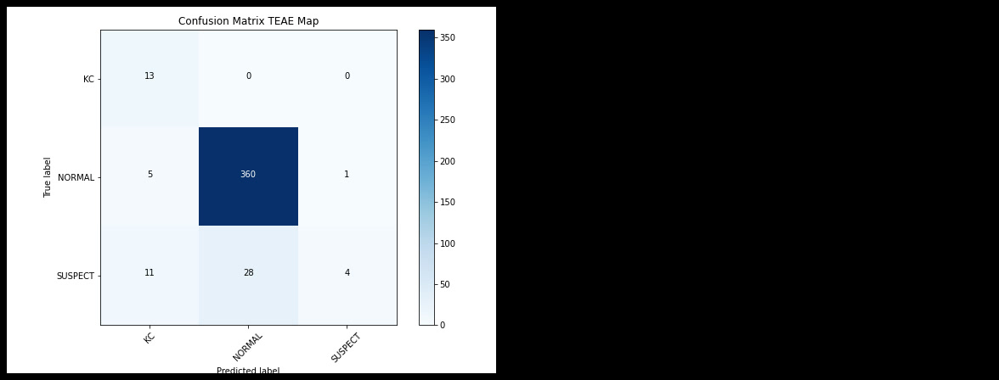
جدول 33قيم مشعرات الدقة الخاصة بمجموعة االختبار التحقق(خارطة االرتفاعات األمامية)
132
الصفحة 133-7-6نتائج الشبكة العصبونية المخصصة لقراءة خارطة االرتفاعات الخلفية:
فيما يلي مصفوفة االلتباس الناتجة عن مجموعة التدريب والتحقق واالختبار األشكال(66و67و)68 على التتالي .تم حساب الحساسية والنوعية والقيمة التنبؤية من اإليجابية والقيمة التنبؤية من السلبية وقيمة ( )F1-scoreوالدقة لكل صنف الجداول (34و35و )36على التتالي.
-1-7-6مجموعة التدريب:
•القرنية المخروطية :الحساسية 96.9%والنوعية 94.9%والقيمة التنبؤية من اإليجابية 45.6%والقيمة التنبؤية من السلبية 99.9%وقيمة ( 92.4% )F1-scoreوالدقة لكشف هذا الصنف .95.4% •القرنيات الطبيعية :الحساسية 98.3%والنوعية 86.2%والقيمة التنبؤية من اإليجابية 97.0%والقيمة التنبؤية من السلبية 91.6%وقيمة ( 95.2% )F1-scoreوالدقة لكشف هذا الصنف .93.8% •القرنيات المشتبه بها :الحساسية 9.0%والنوعية 98.9%والقيمة التنبؤية من اإليجابية 55.9%والقيمة التنبؤية من السلبية 87.2%وقيمة (14.8% )F1-score والدقة لكشف هذا الصنف .91.1%
{kind=link}
جدول 34قيم مشعرات الدقة الخاصة بمجموعة التدريب(خارطة االرتفاعات الخلفية)
133
الصفحة 134-2-7-6مجموعة التحقق:
•القرنية المخروطية :الحساسية 97.3%والنوعية 94.9%والقيمة التنبؤية من اإليجابية 46.0%والقيمة التنبؤية من السلبية 99.9%وقيمة ( 92.7% )F1-scoreوالدقة لكشف هذا الصنف .95.6% •القرنيات الطبيعية :الحساسية 97.9%والنوعية 88.2%والقيمة التنبؤية من اإليجابية 97.4%والقيمة التنبؤية من السلبية 90.4%وقيمة ( 95.6% )F1-scoreوالدقة لكشف هذا الصنف .94.3% •القرنيات المشتبه بها :الحساسية 12.1%والنوعية 98.3%والقيمة التنبؤية من اإليجابية 53.3%والقيمة التنبؤية من السلبية 87.5%وقيمة (18.6% )F1-score والدقة لكشف هذا الصنف .91.0%
{kind=link}
جدول 35قيم مشعرات الدقة الخاصة بمجموعة التحقق(خارطة االرتفاعات الخلفية)
-3-7-6مجموعة االختبار:
•القرنية المخروطية :الحساسية 100.0%والنوعية 96.1%والقيمة التنبؤية من اإليجابية 53.2%والقيمة التنبؤية من السلبية 100.0%وقيمة ()F1-score 61.9%والدقة لكشف هذا الصنف .96.2%
134
الصفحة 135•القرنيات الطبيعية :الحساسية 96.7%والنوعية 53.6%والقيمة التنبؤية من اإليجابية 90.5%والقيمة التنبؤية من السلبية 78.2%وقيمة ( 94.9% )F1-scoreوالدقة لكشف هذا الصنف .91.0% •القرنيات المشتبه بها :الحساسية 7.0%والنوعية 97.4%والقيمة التنبؤية من اإليجابية 29.6%والقيمة التنبؤية من السلبية 86.8%وقيمة (10.7% )F1-score والدقة لكشف هذا الصنف .88.2%
{kind=link}
جدول 36قيم مشعرات الدقة الخاصة بمجموعة االختبار(خارطة االرتفاعات الخلفية)
135
الصفحة 136-8-6نتائج الشبكة العصبونية المخصصة لقراءة خارطة القوة االنكسارية األمامية:
فيما يلي مصفوفة االلتباس الناتجة عن مجموعة التدريب والتحقق واالختبار األشكال(67و68و)69 على التتالي .تم حساب الحساسية والنوعية والقيمة التنبؤية من اإليجابية والقيمة التنبؤية من السلبية وقيمة ( )F1-scoreوالدقة لكل صنف الجداول (37و38و )39على التتالي.
-1-8-6مجموعة التدريب:
•القرنية المخروطية :الحساسية 93.7%والنوعية 98.5%والقيمة التنبؤية من اإليجابية 73.1%والقيمة التنبؤية من السلبية 99.7%وقيمة ( 94.9% )F1-scoreوالدقة لكشف هذا الصنف .97.1% •القرنيات الطبيعية :الحساسية 98.9%والنوعية 80.7%والقيمة التنبؤية من اإليجابية 95.9%والقيمة التنبؤية من السلبية 94.0%وقيمة ( 94.0% )F1-scoreوالدقة لكشف هذا الصنف .92.1% •القرنيات المشتبه بها :الحساسية 21.6%والنوعية 98.9%والقيمة التنبؤية من اإليجابية 76.6%والقيمة التنبؤية من السلبية 88.8%وقيمة (32.6% )F1-score والدقة لكشف هذا الصنف .92.3%
{kind=link}
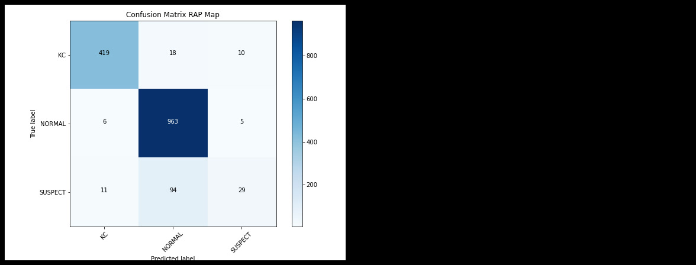
جدول 37قيم مشعرات الدقة الخاصة بمجموعة التدريب(خارطة القوة االنكسارية األمامية)
136
الصفحة 137-2-8-6مجموعة التحقق:
•القرنية المخروطية :الحساسية 94.6%والنوعية 94.9%والقيمة التنبؤية من اإليجابية 45.3%والقيمة التنبؤية من السلبية 99.7%وقيمة ( 91.3% )F1-scoreوالدقة لكشف هذا الصنف .94.8% •القرنيات الطبيعية :الحساسية 91.8%والنوعية 83.3%والقيمة التنبؤية من اإليجابية 96.2%والقيمة التنبؤية من السلبية 69.0%وقيمة ( 91.0% )F1-scoreوالدقة لكشف هذا الصنف .88.6% •القرنيات المشتبه بها :الحساسية 12.1%والنوعية 95.2%والقيمة التنبؤية من اإليجابية 28.7%والقيمة التنبؤية من السلبية 87.2%وقيمة (14.8% )F1-score والدقة لكشف هذا الصنف .88.1%
{kind=link}
جدول 38قيم مشعرات الدقة الخاصة بمجموعة التحقق(خارطة القوة االنكسارية األمامية)
-3-8-6مجموعة االختبار:
•القرنية المخروطية :الحساسية 84.6%والنوعية 99.3%والقيمة التنبؤية من اإليجابية 83.7%والقيمة التنبؤية من السلبية 99.3%وقيمة ( 81.5% )F1-scoreوالدقة لكشف هذا الصنف .98.8%
137
الصفحة 138•القرنيات الطبيعية :الحساسية 100.0%والنوعية 28.6%والقيمة التنبؤية من اإليجابية 86.4%والقيمة التنبؤية من السلبية 100.0%وقيمة ()F1-score 94.8%والدقة لكشف هذا الصنف .90.5% •القرنيات المشتبه بها :الحساسية 2.3%والنوعية 99.7%والقيمة التنبؤية من اإليجابية 58.4%والقيمة التنبؤية من السلبية 86.5%وقيمة (4.4% )F1-score والدقة لكشف هذا الصنف .89.8%
{kind=link}
جدول 39قيم مشعرات الدقة الخاصة بمجموعة االختبار(خارطة القوة االنكسارية األمامية)
138
الصفحة 139-9-6نتائج الشبكة العصبونية المخصصة لقراءة خارطة القوة االنكسارية الخلفية:
فيما يلي مصفوفة االلتباس الناتجة عن مجموعة التدريب والتحقق واالختبار األشكال(72و73و)74 على التتالي .تم حساب الحساسية والنوعية والقيمة التنبؤية من اإليجابية والقيمة التنبؤية من السلبية وقيمة ( )F1-scoreوالدقة لكل صنف الجداول (40و41و )42على التتالي.
-1-9-6مجموعة التدريب:
•القرنية المخروطية :الحساسية 91.7%والنوعية 99.2%والقيمة التنبؤية من اإليجابية 83.4%والقيمة التنبؤية من السلبية 99.6%وقيمة ( 94.7% )F1-scoreوالدقة لكشف هذا الصنف .97.0% •القرنيات الطبيعية :الحساسية 99.9%والنوعية 71.9%والقيمة التنبؤية من اإليجابية 94.2%والقيمة التنبؤية من السلبية 99.4%وقيمة ( 92.2% )F1-scoreوالدقة لكشف هذا الصنف .89.5% •القرنيات المشتبه بها :الحساسية 0.0%والنوعية 100.0%والقيمة التنبؤية من اإليجابية nan%والقيمة التنبؤية من السلبية 86.3%وقيمة (nan% )F1-score والدقة لكشف هذا الصنف .91.4%
{kind=link}
جدول 40قيم مشعرات الدقة الخاصة بمجموعة التدريب (خارطة القوة االنكسارية الخلفية)
139
الصفحة 140-2-9-6مجموعة التحقق:
•القرنية المخروطية :الحساسية 97.3%والنوعية 97.8%والقيمة التنبؤية من اإليجابية 66.6%والقيمة التنبؤية من السلبية 99.9%وقيمة ( 96.0% )F1-scoreوالدقة لكشف هذا الصنف .97.7% •القرنيات الطبيعية :الحساسية 100.0%والنوعية 79.2%والقيمة التنبؤية من اإليجابية 95.6%والقيمة التنبؤية من السلبية 100.0%وقيمة ()F1-score 94.2%والدقة لكشف هذا الصنف .92.2% •القرنيات المشتبه بها :الحساسية 0.0%والنوعية 100.0%والقيمة التنبؤية من اإليجابية nan%والقيمة التنبؤية من السلبية 86.3%وقيمة (nan% )F1-score والدقة لكشف هذا الصنف .91.5%
{kind=link}
جدول 41قيم مشعرات الدقة الخاصة بمجموعة التحقق (خارطة القوة االنكسارية الخلفية)
-3-9-6مجموعة االختبار:
•القرنية المخروطية :الحساسية 92.3%والنوعية 99.3%والقيمة التنبؤية من اإليجابية 84.8%والقيمة التنبؤية من السلبية 99.7%وقيمة ( 85.7% )F1-scoreوالدقة لكشف هذا الصنف .99.1%
140
الصفحة 141•القرنيات الطبيعية :الحساسية 100.0%والنوعية 26.8%والقيمة التنبؤية من اإليجابية 86.1%والقيمة التنبؤية من السلبية 100.0%وقيمة ()F1-score 94.7%والدقة لكشف هذا الصنف .90.3% •القرنيات المشتبه بها :الحساسية 0.0%والنوعية 100.0%والقيمة التنبؤية من اإليجابية nan%والقيمة التنبؤية من السلبية 86.3%وقيمة (nan% )F1-score والدقة لكشف هذا الصنف .89.8%
{kind=link}
جدول 42قيم مشعرات الدقة الخاصة بمجموعة االختبار(خارطة القوة االنكسارية الخلفية)
141
الصفحة 142-10-6نتائج الشبكة العصبونية المخصصة لقراءة خارطة القوة االنكسارية المكافئة:
فيما يلي مصفوفة االلتباس الناتجة عن مجموعة التدريب والتحقق واالختبار األشكال(75و76و)77 على التتالي .تم حساب الحساسية والنوعية والقيمة التنبؤية من اإليجابية والقيمة التنبؤية من السلبية وقيمة ( )F1-scoreوالدقة لكل صنف الجداول (43و44و )45على التتالي.
-1-10-6مجموعة التدريب:
•القرنية المخروطية :الحساسية 91.9%والنوعية 98.5%والقيمة التنبؤية من اإليجابية 72.7%والقيمة التنبؤية من السلبية 99.6%وقيمة ( 93.9% )F1-scoreوالدقة لكشف هذا الصنف .96.6% •القرنيات الطبيعية :الحساسية 98.5%والنوعية 73.8%والقيمة التنبؤية من اإليجابية 94.5%والقيمة التنبؤية من السلبية 91.3%وقيمة ( 92.0% )F1-scoreوالدقة لكشف هذا الصنف .89.3% •القرنيات المشتبه بها :الحساسية 3.7%والنوعية 99.2%والقيمة التنبؤية من اإليجابية 43.4%والقيمة التنبؤية من السلبية 86.6%وقيمة (6.7% )F1-score والدقة لكشف هذا الصنف .91.0%
{kind=link}
جدول 43قيم مشعرات الدقة الخاصة بمجموعة التدريب(خارطة القوة االنكسارية المكافئة)
142
الصفحة 143-2-10-6مجموعة التحقق:
•القرنية المخروطية :الحساسية 96.4%والنوعية 96.4%والقيمة التنبؤية من اإليجابية 54.2%والقيمة التنبؤية من السلبية 99.8%وقيمة ( 93.9% )F1-scoreوالدقة لكشف هذا الصنف .96.4% •القرنيات الطبيعية :الحساسية 99.2%والنوعية 81.2%والقيمة التنبؤية من اإليجابية 96.0%والقيمة التنبؤية من السلبية 95.6%وقيمة ( 94.3% )F1-scoreوالدقة لكشف هذا الصنف .92.5% •القرنيات المشتبه بها :الحساسية 3.0%والنوعية 99.7%والقيمة التنبؤية من اإليجابية 63.1%والقيمة التنبؤية من السلبية 86.6%وقيمة (5.7% )F1-score والدقة لكشف هذا الصنف .91.5%
{kind=link}
جدول 44قيم مشعرات الدقة الخاصة بمجموعة التحقق(خارطة القوة االنكسارية المكافئة)
-3-10-6مجموعة االختبار:
•القرنية المخروطية :الحساسية 92.3%والنوعية 98.5%والقيمة التنبؤية من اإليجابية 73.7%والقيمة التنبؤية من السلبية 99.7%وقيمة ( 77.4% )F1-scoreوالدقة لكشف هذا الصنف .98.3%
143
الصفحة 144•القرنيات الطبيعية :الحساسية 99.2%والنوعية 33.9%والقيمة التنبؤية من اإليجابية 87.2%والقيمة التنبؤية من السلبية 90.1%وقيمة ( 94.8% )F1-scoreوالدقة لكشف هذا الصنف .90.5% •القرنيات المشتبه بها :الحساسية 2.3%والنوعية 99.2%والقيمة التنبؤية من اإليجابية 31.9%والقيمة التنبؤية من السلبية 86.4%وقيمة (4.3% )F1-score والدقة لكشف هذا الصنف .89.3%
{kind=link}
جدول 45قيم مشعرات الدقة الخاصة بمجموعة االختبار(خارطة القوة االنكسارية المكافئة)
144
الصفحة 145-11-6نتائج الدقة االجمالية لنظام الذكاء الصنعي:
فيما يلي مصفوفة االلتباس الناتجة عن مجموعة التدريب والتحقق واالختبار األشكال(78و79و)80 على التتالي .تم حساب الحساسية والنوعية والقيمة التنبؤية من اإليجابية والقيمة التنبؤية من السلبية وقيمة ( )F1-scoreوالدقة لكل صنف الجداول (46و47و )48على التتالي.
-1-11-6مجموعة التدريب:
•القرنية المخروطية :الحساسية 94.6%والنوعية 99.8%والقيمة التنبؤية من اإليجابية 95.9%والقيمة التنبؤية من السلبية 99.8%وقيمة ( 97.0% )F1-scoreوالدقة لكشف هذا الصنف .98.3% •القرنيات الطبيعية :الحساسية 98.8%والنوعية 91.7%والقيمة التنبؤية من اإليجابية 98.2%والقيمة التنبؤية من السلبية 94.2%وقيمة ( 97.0% )F1-scoreوالدقة لكشف هذا الصنف .96.1% •القرنيات المشتبه بها :الحساسية 62.7%والنوعية 97.5%والقيمة التنبؤية من اإليجابية 79.8%والقيمة التنبؤية من السلبية 94.3%وقيمة (66.1% )F1-score والدقة لكشف هذا الصنف .94.5%
{kind=link}
جدول 46قيم مشعرات الدقة الخاصة بمجموعة التدريب (نظام الذكاء الصنعي)
145
الصفحة 146-2-11-6مجموعة التحقق:
•القرنية المخروطية :الحساسية 93.8%والنوعية 99.3%والقيمة التنبؤية من اإليجابية 85.2%والقيمة التنبؤية من السلبية 99.7%وقيمة ( 95.9% )F1-scoreوالدقة لكشف هذا الصنف .97.7% •القرنيات الطبيعية :الحساسية 98.8%والنوعية 91.8%والقيمة التنبؤية من اإليجابية 98.2%والقيمة التنبؤية من السلبية 94.2%وقيمة ( 97.0% )F1-scoreوالدقة لكشف هذا الصنف .96.1% •القرنيات المشتبه بها :الحساسية 60.6%والنوعية 97.5%والقيمة التنبؤية من اإليجابية 79.2%والقيمة التنبؤية من السلبية 94.0%وقيمة (64.5% )F1-score والدقة لكشف هذا الصنف .94.3%
{kind=link}
جدول 47قيم مشعرات الدقة الخاصة بمجموعة التحقق (نظام الذكاء الصنعي)
146
الصفحة 147-3-11-6مجموعة االختبار:
•القرنية المخروطية :الحساسية 92.3%والنوعية 99.5%والقيمة التنبؤية من اإليجابية 89.4%والقيمة التنبؤية من السلبية 99.7%وقيمة ( 88.9% )F1-scoreوالدقة لكشف هذا الصنف .99.3% •القرنيات الطبيعية :الحساسية 98.4%والنوعية 57.1%والقيمة التنبؤية من اإليجابية 91.3%والقيمة التنبؤية من السلبية 88.4%وقيمة ( 96.0% )F1-scoreوالدقة لكشف هذا الصنف .92.9% •القرنيات المشتبه بها :الحساسية 39.5%والنوعية 98.2%والقيمة التنبؤية من اإليجابية 77.3%والقيمة التنبؤية من السلبية 91.1%وقيمة (50.7% )F1-score والدقة لكشف هذا الصنف .92.2%
{kind=link}
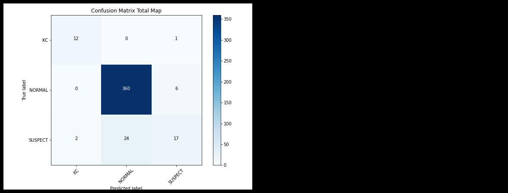
جدول 48قيم مشعرات الدقة الخاصة بمجموعة االختبار(نظام الذكاء الصنعي)
147
الصفحة 148-12-6نتائج البرنامج الملحق بجهاز :SIRIUS
فيما يلي مصفوفة االلتباس الناتجة عن مجموعة االختبار شكل ( .)81تم حساب الحساسية والنوعية والقيمة التنبؤية من اإليجابية والقيمة التنبؤية من السلبية وقيمة ( )F1-scoreوالدقة لكل صنف جدول (.)49
مشعرات الدقة
•القرنية المخروطية :الحساسية 84.6%والنوعية 99.5%والقيمة التنبؤية من اإليجابية 88.5%والقيمة التنبؤية من السلبية 99.3%وقيمة ( 84.6% )F1-scoreوالدقة لكشف هذا الصنف .99.1% •القرنيات الطبيعية :الحساسية 98.1%والنوعية 58.9%والقيمة التنبؤية من اإليجابية 91.6%والقيمة التنبؤية من السلبية 87.1%وقيمة ( 96.0% )F1-scoreوالدقة لكشف هذا الصنف .92.9% •القرنيات المشتبه بها :الحساسية 41.9%والنوعية 97.6%والقيمة التنبؤية من اإليجابية 73.7%والقيمة التنبؤية من السلبية 91.3%وقيمة (51.4% )F1-score والدقة لكشف هذا الصنف .91.9%
{kind=link}
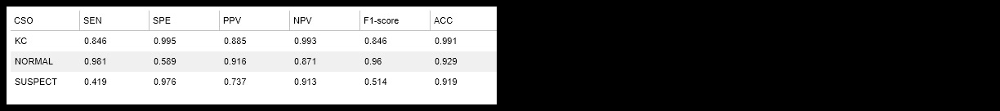
جدول 49قيم مشعرات الدقة الخاصة بمجموعة االختبار()SIRIUS
148
الصفحة 149-13-6نتائج قراءة الطبيب دون مساعدة نظام الذكاء الصنعي:
فيما يلي مصفوفة االلتباس الناتجة عن مجموعة االختبار شكل ( .)82تم حساب الحساسية والنوعية والقيمة التنبؤية من اإليجابية والقيمة التنبؤية من السلبية وقيمة ( )F1-scoreوالدقة لكل صنف جدول (.)50
مشعرات الدقة
•القرنية المخروطية :الحساسية 84.6%والنوعية 99.8%والقيمة التنبؤية من اإليجابية 93.9%والقيمة التنبؤية من السلبية 99.3%وقيمة ( 88.0% )F1-scoreوالدقة لكشف هذا الصنف .99.3% •القرنيات الطبيعية :الحساسية 98.1%والنوعية 60.7%والقيمة التنبؤية من اإليجابية 91.9%والقيمة التنبؤية من السلبية 87.5%وقيمة ( 96.1% )F1-scoreوالدقة لكشف هذا الصنف .93.1% •القرنيات المشتبه بها :الحساسية 46.5%والنوعية 97.6%والقيمة التنبؤية من اإليجابية 75.7%والقيمة التنبؤية من السلبية 92.0%وقيمة (55.6% )F1-score والدقة لكشف هذا الصنف .92.4%
{kind=link}
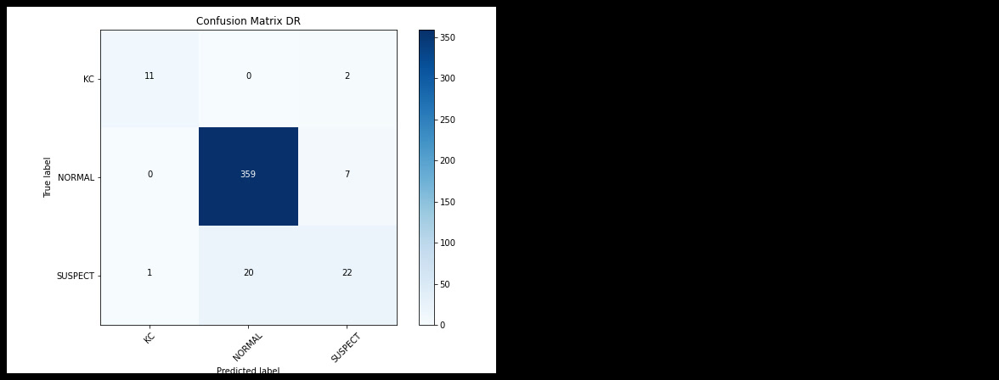
جدول 50قيم مشعرات الدقة الخاصة بمجموعة االختبار(الطبيب دون مساعدة نظام الذكاء الصنعي)
149
الصفحة 150-14-6نتائج قراءة الطبيب مع مساعدة نظام الذكاء الصنعي:
فيما يلي مصفوفة االلتباس الناتجة عن مجموعة االختبار شكل ( .)83تم حساب الحساسية والنوعية والقيمة التنبؤية من اإليجابية والقيمة التنبؤية من السلبية وقيمة ( )F1-scoreوالدقة لكل صنف جدول (.)51
مشعرات الدقة
•القرنية المخروطية :الحساسية 92.3%والنوعية 99.8%والقيمة التنبؤية من اإليجابية 94.4%والقيمة التنبؤية من السلبية 99.7%وقيمة ( 92.3% )F1-scoreوالدقة لكشف هذا الصنف .99.5% •القرنيات الطبيعية :الحساسية 99.7%والنوعية 76.8%والقيمة التنبؤية من اإليجابية 95.1%والقيمة التنبؤية من السلبية 98.4%وقيمة ( 98.1% )F1-scoreوالدقة لكشف هذا الصنف .96.7% •القرنيات المشتبه بها :الحساسية 67.4%والنوعية 99.5%والقيمة التنبؤية من اإليجابية 95.3%والقيمة التنبؤية من السلبية 95.0%وقيمة (78.4% )F1-score والدقة لكشف هذا الصنف .96.2%
{kind=link}
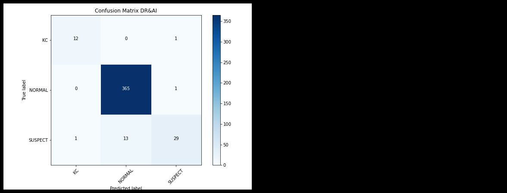
جدول 51قيم مشعرات الدقة الخاصة بمجموعة االختبار(الطبيب مع مساعدة نظام الذكاء الصنعي)
150
الصفحة 151-15-6نتائج قراءة الطبيب مع مساعدة جهاز :SIRIUS
فيما يلي مصفوفة االلتباس الناتجة عن مجموعة االختبار شكل ( .)84تم حساب الحساسية والنوعية والقيمة التنبؤية من اإليجابية والقيمة التنبؤية من السلبية وقيمة ( )F1-scoreوالدقة لكل صنف جدول (.)52
مشعرات الدقة
•القرنية المخروطية :الحساسية 92.3%والنوعية 99.8%والقيمة التنبؤية من اإليجابية 94.4%والقيمة التنبؤية من السلبية 99.7%وقيمة ( 92.3% )F1-scoreوالدقة لكشف هذا الصنف .99.5% •القرنيات الطبيعية :الحساسية 98.9%والنوعية 69.6%والقيمة التنبؤية من اإليجابية 93.7%والقيمة التنبؤية من السلبية 93.3%وقيمة ( 97.2% )F1-scoreوالدقة لكشف هذا الصنف .95.0% •القرنيات المشتبه بها :الحساسية 58.1%والنوعية 98.7%والقيمة التنبؤية من اإليجابية 87.5%والقيمة التنبؤية من السلبية 93.7%وقيمة (68.5% )F1-score والدقة لكشف هذا الصنف .94.5%
{kind=link}
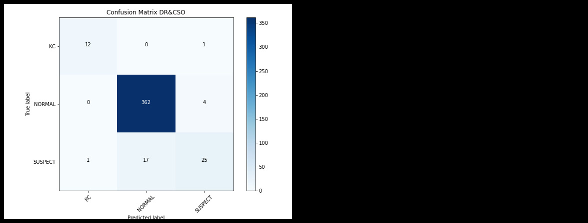
جدول 52قيم مشعرات الدقة الخاصة بمجموعة االختبار(الطبيب مع مساعدة جهاز )SIRIUS
151
الصفحة 152-16-6تطبيق اختبار McNemarللمقارنة بين النماذج السابقة:
لمعرفة هل هناك فرق حقيقي بين النماذج السابقة (نظام الذكاء الصنعي وجهاز SIRIUSوالطبيب بدون مساعدة والطبيب مع مساعدة نظام الذكاء الصنعي والطبيب مع مساعدة) ،سنقارن بين نتائج هذه النماذج باستخدام اختبار .McNemarحيث ستتم المقارنة كل مرة بين نتائج زوجين منها جدول ( )53أشكال (.)94-85
جدول 53جدول يلخص اختبارات McNemar
152
الصفحة 153-1-16-6المقارنة بين نظام الذكاء الصنعي وجهاز :SIRIUS
بتطبيق اختبار McNemarعلى مصفوفة االلتباس الثنائية (النتائج صحيحة مقابل الخاطئة لكل من النموذجين) شكل ( )85جدول ( ،)53نجد أن P=100.0%>5%وبالتالي ال يوجد فرق هام إحصائياً بين نتائج نظام الذكاء الصنعي وجهاز .SIRIUS
{kind=link}
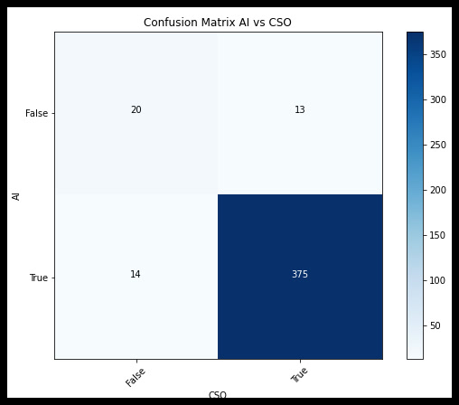
-2-16-6المقارنة بين نظام الذكاء الصنعي والطبيب بدون مساعدة:
بتطبيق اختبار McNemarعلى مصفوفة االلتباس الثنائية (النتائج صحيحة مقابل الخاطئة لكل من النموذجين) شكل ( )86جدول ( ،)53نجد أن P=72.0%>5%وبالتالي ال يوجد فرق هام إحصائياً بين نتائج نظام الذكاء الصنعي والطبيب بدون مساعدة.
مصفوفة االلتباس الثنائية (نتائج نظام الذكاء الصنعي مقابل نتائج الطبيب بدون مساعدة) شكل 86
153
الصفحة 154-3-16-6المقارنة بين نظام الذكاء الصنعي والطبيب مع مساعدة نظام الذكاء الصنعي:
بتطبيق اختبار McNemarعلى مصفوفة االلتباس الثنائية (النتائج صحيحة مقابل الخاطئة لكل من النموذجين) شكل ( )87جدول ( ،)53نجد أن P=0.0%<5%وبالتالي يوجد فرق هام إحصائياً بين نتائج نظام الذكاء الصنعي والطبيب مع مساعدة نظام الذكاء الصنعي.
مصفوفة االلتباس الثنائية (نتائج نظام الذكاء الصنعي مقابل نتائج الطبيب مع مساعدة الذكاء الصنعي) شكل 87
-4-16-6المقارنة بين نظام الذكاء الصنعي والطبيب مع مساعدة :SIRIUS
بتطبيق اختبار McNemarعلى مصفوفة االلتباس الثنائية (النتائج صحيحة مقابل الخاطئة لكل من النموذجين) شكل ( )88جدول ( ،)53نجد أن P=7.6%>5%وبالتالي ال يوجد فرق هام إحصائياً بين نتائج نظام الذكاء الصنعي والطبيب مع مساعدة جهاز .SIRIUS
{kind=link}
154
الصفحة 155-5-16-6المقارنة بين نتائج جهاز SIRIUSوالطبيب بدون مساعدة:
بتطبيق اختبار McNemarعلى مصفوفة االلتباس الثنائية (النتائج صحيحة مقابل الخاطئة لكل من النموذجين) شكل ( )89جدول ( ،)53نجد أن P=50.3%>5%وبالتالي ال يوجد فرق هام إحصائياً بين نتائج جهاز SIRIUSوالطبيب بدون مساعدة.
{kind=link}
-6-16-6المقارنة بين نتائج جهاز SIRIUSوالطبيب مع مساعدة نظام الذكاء الصنعي:
بتطبيق اختبار McNemarعلى مصفوفة االلتباس الثنائية (النتائج صحيحة مقابل الخاطئة لكل من النموذجين) شكل ( )90جدول ( ،)53نجد أن P=0.0%<5%وبالتالي يوجد فرق هام إحصائياً بين نتائج جهاز SIRIUSوالطبيب مع مساعدة نظام الذكاء الصنعي.
{kind=link}
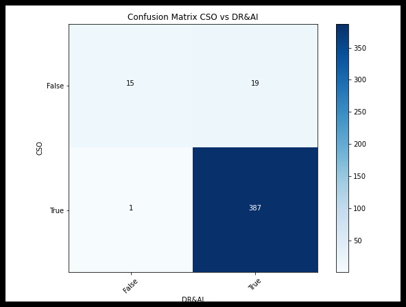
155
الصفحة 156-7-16-6المقارنة بين نتائج جهاز SIRIUSوالطبيب مع مساعدة جهاز :SIRIUS
بتطبيق اختبار McNemarعلى مصفوفة االلتباس الثنائية (النتائج صحيحة مقابل الخاطئة لكل من النموذجين) شكل ( )91جدول ( ،)53نجد أن P=0.1%<5%وبالتالي يوجد فرق هام إحصائياً بين نتائج جهاز SIRIUSوالطبيب مع مساعدة جهاز .SIRIUS
{kind=link}
-8-16-6المقارنة بين نتائج طبيب بدون مساعدة والطبيب مع مساعدة نظام الذكاء الصنعي:
بتطبيق اختبار McNemarعلى مصفوفة االلتباس الثنائية (النتائج صحيحة مقابل الخاطئة لكل من النموذجين) شكل ( )92جدول ( ،)53نجد أن P=0.0%<5%وبالتالي يوجد فرق هام إحصائياً بين نتائج الطبيب بدون ومع مساعدة نظام الذكاء الصنعي.
{kind=link}
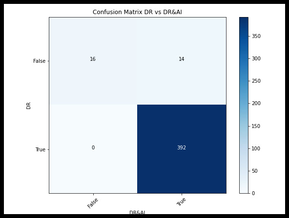
الصنعي)
156
الصفحة 157-9-16-6المقارنة بين نتائج طبيب بدون مساعدة والطبيب مع مساعدة جهاز :SIRIUS
بتطبيق اختبار McNemarعلى مصفوفة االلتباس الثنائية (النتائج صحيحة مقابل الخاطئة لكل من النموذجين) شكل ( )93جدول ( ،)53نجد أن P=3.9%<5%وبالتالي يوجد فرق هام إحصائياً بين نتائج الطبيب بدون ومع مساعدة جهاز .SIRIUS
{kind=link}
-9-16-6المقارنة بين نتائج طبيب مع مساعدة نظام الذكاء الصنعي والطبيب مع مساعدة جهاز
:SIRIUS بتطبيق اختبار McNemarعلى مصفوفة االلتباس الثنائية (النتائج صحيحة مقابل الخاطئة لكل من النموذجين) شكل ( )94جدول ( ،)53نجد أن P=3.9%<5%وبالتالي يوجد فرق هام إحصائياً بين نتائج الطبيب مع مساعدة نظام الذكاء الصنعي والطبيب مع مساعدة جهاز .SIRIUS
{kind=link}
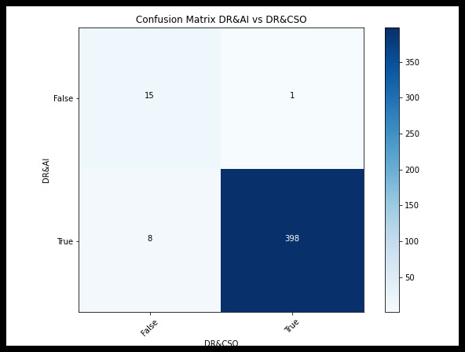
جهاز )SIRIUS
157
أشكال موثقة في قائمة الأشكال
لم يظهر موضع تسمية هذه الأشكال بوضوح في استخراج PDF؛ تُعرض هنا كأصول أشكال مستخرجة من PDF الأصلي مع الحفاظ على رقم الصفحة.
{kind=link}
{kind=link}
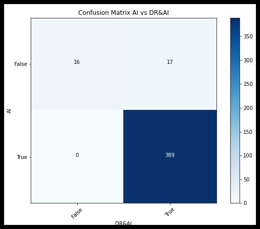